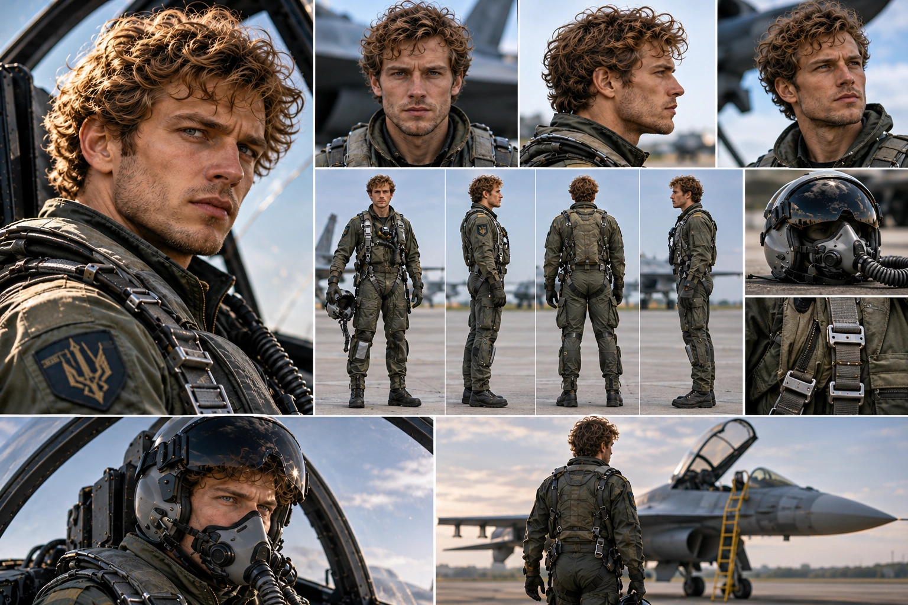

ОСНОВНА ІНФОРМАЦІЯ
Пілот, який опинився за межами звичного неба
Марек — бойовий пілот, учасник повітряного бою біля міста-шляху. Він діє у складі авіаційної ланки й відповідає за власну групу літаків. Марек не є командиром авіагрупи чи всієї операції: його зона відповідальності обмежена ланкою.
Роль: бойовий пілот
Підпорядкування: авіаційна ланка
Відповідальність: керує власною ланкою
Сюжетна лінія: День 17 · «Пастка» / «Інший план»
Вік і зріст: у підтвердженому каноні не встановлені
Особливі здібності: не підтверджені
ПОВІТРЯНИЙ БІЙ
Портал-пастка
Під час бою винищувачі Другого плану ведуть повітряне перехоплення. Нападники змушені зосередитися на повітряному бою й уже не можуть ефективно діяти на землі. Перед Мареком раптово відкривається портал. Він намагається ухилитися, але не встигає пройти повз нього.
Після переходу літак втрачає тягу. Марек зберігає керованість машини й використовує залишок швидкості, щоб перейти в планерування та здійснити жорстку посадку. Навколо він бачить інші літаки й пілотів, які опинилися в такому самому становищі.
ІНШИЙ ПЛАН
Світ, у якому двигуни мовчать
На цьому Плані атмосфера надзвичайно щільна, а її склад порушує роботу реактивних двигунів. Звичайні літаки не можуть летіти на тязі двигунів, проте залишаються керованими й здатні планувати. Марек ще не знає причини несправності — він має лише безпосередній досвід аварійної ситуації та бачить, що з нею зіткнулися й інші пілоти.
Межі підтвердженого канону
Підтверджено роль Марека як бойового пілота, керування лише власною ланкою, раптове потрапляння через портал, втрату тяги зі збереженням керованості, планерування та вимушену посадку. Його вік, зріст, родина, походження й подальша доля в цих сценах не визначені.